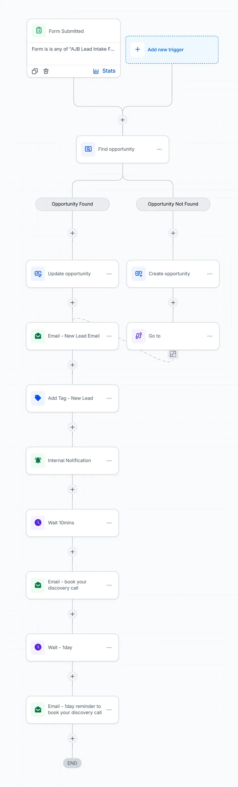

001
New Lead
Trigger: lead intake form submitted
- Finds the contact's opportunity, or creates one
- Sends a welcome email and adds the New Lead tag
- Notifies the team with an internal alert
- After 10 minutes, invites the lead to book a discovery call
- Sends a gentle reminder the next day